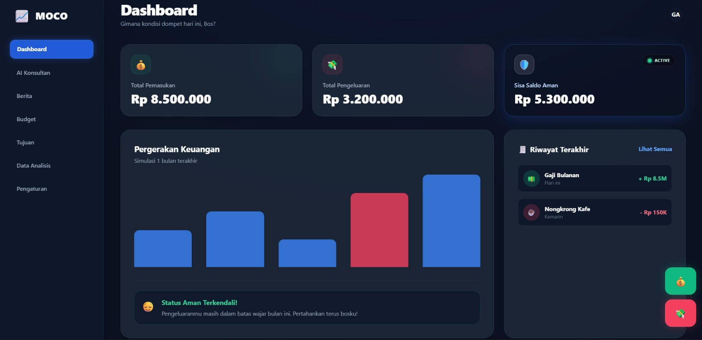
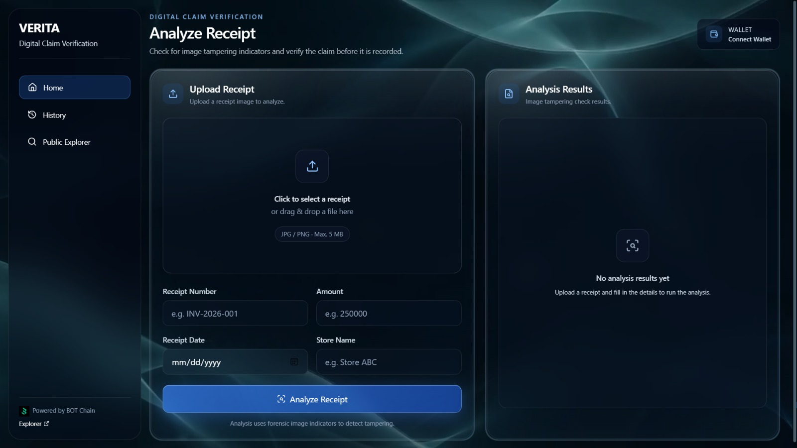

Selected Projects
Sentuhan kreativitas dalam setiap baris kode.
Fullstack
UI/UX
React
CSS
HTML

Aurora Scheduler
— MANAGEMENT APP
Aurora Scheduler
Sistem manajemen kalender yang dirancang untuk efisiensi tinggi menggunakan backend Go.
View Project
Go
AI
TAILWIND

MOCO Dashboard
— FINTECH SOLUTION
MOCO
Dashboard finansial dengan asisten AI terintegrasi untuk analisis pengeluaran otomatis.
Explore Code
MySQL
JS

To Done (To-Do App)
— PRODUCTIVITY
To Done
Platform kolaborasi tim untuk mengelola tugas harian dan progres akademik mahasiswa.
Launch App
CSS
HTML
JS

Our Little Archive
— PERSONAL WEB
Albums
Arsip digital personal yang dirancang khusus untuk menyimpan momen berharga.
Open Archive
NEXT
TAILWIND
AI

Our Little Archive
TRANSACTION VERIFICATION
VERITA
Platform untuk memverifikasi transaksi usaha yang melacak nota belanja karyawan, menggunakan AI untuk mendeteksi nota yang berpotensi palsu, serta menghubungkan transaksi langsung ke wallet pemilik usaha.
View Project